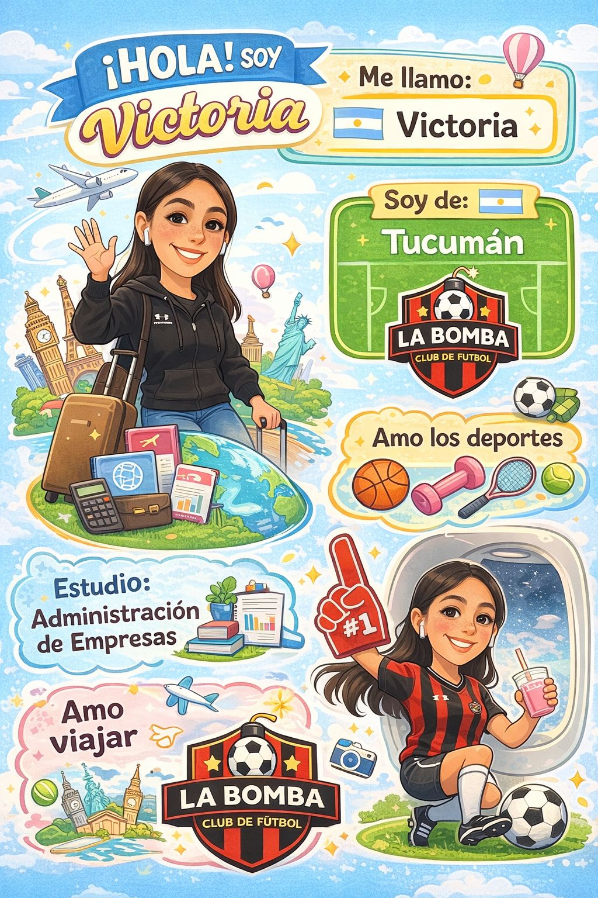

¡Hola! Soy María Victoria Lizondo 👋
Actualmente soy estudiante de Licenciatura en Administración de Empresas
en la Universidad Argentina de la Empresa (UADE),
modalidad a distancia, y de
Ingeniería Civil en la
Universidad Tecnológica Nacional (UTN) - Facultad Regional Tucumán,
modalidad presencial en San Miguel de Tucumán.
Elegí cursar ambas carreras porque considero que combinan dos áreas que se complementan:
la gestión y administración de organizaciones junto con la formación técnica y analítica que
aporta la ingeniería.
Mi objetivo es desarrollar una visión integral que me permita afrontar proyectos desde una
perspectiva estratégica y técnica, incorporando además conocimientos en desarrollo web y
herramientas digitales.
Presentación Personal
La siguiente infografía resume de forma visual información sobre mi perfil académico, intereses y algunos aspectos personales que forman parte de mi trayectoria.
